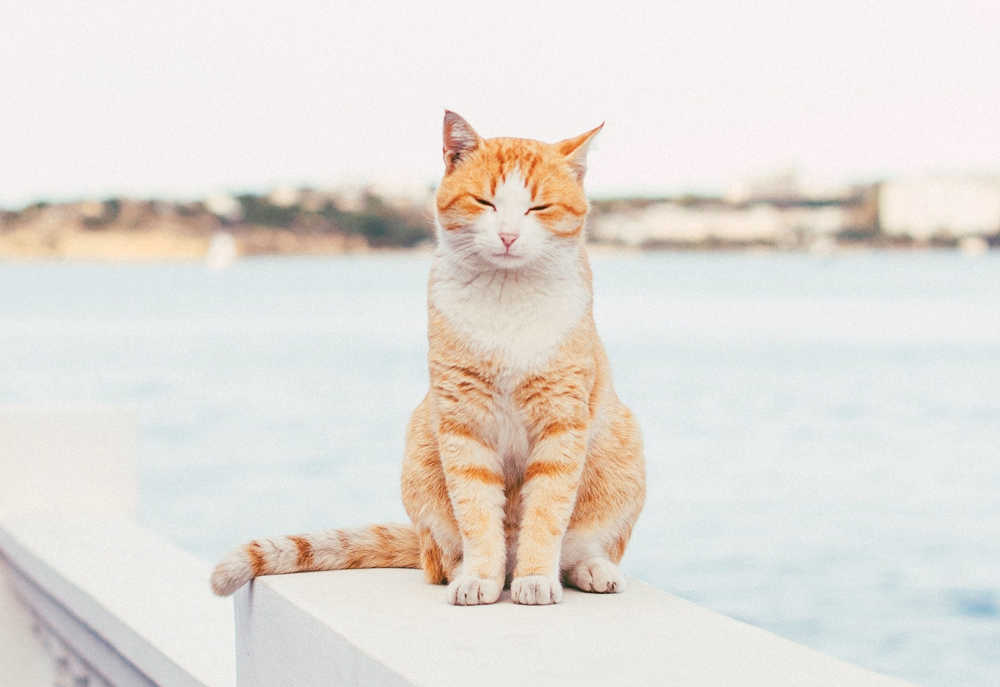

Origin of cat breed
Cats, belonging to the feline family, are divided into domestic and feral cats, and are relatively widespread pets in households around the world. The ancestor of the domestic cat is presumed to be the desert cat of ancient Egypt and the Persian cat of Persia, which has been domesticated by humans for 3,500 years (but not as completely as the dog). The average cat: round head, short face, five-fingered forelimbs, four-toed hindlimbs with sharp, curved claws at the ends of the toes, claws retractable. Nocturnal. Hunts other animals by ambush and can mostly climb up trees. Cats have fatty fleshy pads on the underside of their toes to avoid making noise when walking and to avoid scaring away rats when hunting. The claws are retracted when walking to prevent the claws from being blunted, and they will be stretched out when catching mice and climbing rocks. Cats, divided into many species, are the natural enemies of mice. Livestock are found everywhere. There are yellow, black, white, gray and other colors; the body is like a raccoon, and the appearance is like a tiger, with soft fur and sharp teeth (there are almost hairless varieties). The tail is long and the waist is short, the eyes are like gold and silver, and the one with more ribs on the palate is the best. Small body, attractive appearance. very curious. Cats are agile and good at jumping. Eat fish, rats, rabbits, etc. The reason why cats like to eat fish and mice is because cats are nocturnal animals. In order to see things clearly at night, they need a lot of taurine, and the bodies of mice and fish contain taurine.

Main varieties
Short-haired cats: Short hair, neat and smooth, delicate texture, strong bones, quick movements, wild features, easy daily care, understand human language, docile and approachable, as a companion animal, especially popular. There are many varieties of short-haired cats distributed almost all over the world. The main varieties are as follows: British short-haired cat, American short-haired cat, European short-haired cat, Oriental short-haired cat, Siamese cat, curly-haired cat, Burmese cat, Havana cat , Singapore cat, Isle of Man cat, Egyptian cat, Bengal cat, Scottish fold cat, American curly cat, California shiny cat, Canadian hairless cat, Japanese Bobtail cat, Korat cat, Abyssinian cat, Bombay cat, Russian blue cat, Asian cat group. Long-haired cat: the hair length is 5-10cm, soft and smooth, and changes slightly depending on the season. He has a beautiful figure and steady movements; he has a docile personality and strong dependence, and likes to be close to others; he has a soft voice and likes to act like a baby in front of his master. Although the fur needs to be combed every day, it will shed a lot of hair in early summer. Daily care is a little troublesome, but as a companion animal, it is also loved by people. The main breeds of long-haired cats are as follows: Persian cat, Chinchilla cat, Himalayan cat, Maine Coon cat, Berman cat, Angora cat, Turkish Van cat, Norwegian Forest cat, Siberian cat, Ragdoll cat, Somali cat